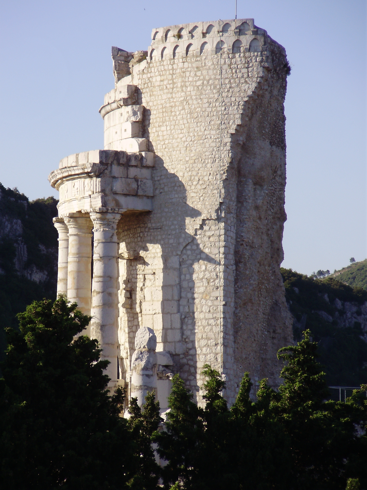

Horace is a poet of structure.1 And no more so than in his Odes. Scholars again and again refer to his poems using architectural vocabulary.2 It is almost more of a surprise, in fact, when a scholar of Horace does not discuss the “structure” of an individual poem, of a single book, or of the collection as a whole. This sense of structure can include the more literal way that different poems are arranged within and between themselves, that is, the “architectonics” of Horace’s poetry. The idea of structure can also extend beyond this organizational sense, though, to the more metaphorical ways in which Horace has “constructed” his Odes.3 In Gregson Davis’ study of the complexities of the Horatian lyric voice, for instance, he considers the Odes to be “an ideational building, which it is part of the business of the critic to reconstruct.”4
This use of architectural discourse to discuss Horace’s Odes is no accident. The poet himself famously proclaims his first collection of lyric poetry to be a monumentum – one higher than the pyramids no less – and this image has influenced how readers (and scholars) thereafter have understood and imagined the Odes.5 This chapter will look at the “structure” of the Odes, too, but not in the sense of a lyric collection with a brilliant design of lines, poems, and books. Nor will I be using architectural metaphors only to introduce or summarize – as Davis does – how I as a scholar of the Odes might read Horace’s lyric corpus. The focus of this chapter is rather to examine Horace’s architexture, that is, the architectural imagery that the poet himself employs to represent the generic limits of his poetry. The point of this analysis is not merely to admire or praise Horace’s amazing “structure,” as so many rightly have. I aim rather to show how engaging in architectural discourse of this sort allows the poet to redefine “traditional” lyric space and time in a way that puts him in dialogue with Augustus’ own redefinition of traditional Roman structures in the language of the Res Gestae.
What is “traditional” lyric time and space in the Odes? It is not simply the dimensions that Horace’s lyric predecessors, Greek and Roman, had crafted in their poems. Horace was starting fresh in the sense that when he “decided to compose lyric, despite experimentation by Callimachus, Theocritus, Laevius, and Catullus,6 the kind was dead, that is, there was no living tradition of lyric to generate some sort of ‘natural,’ rule-generating form.”7 What counted as “traditional” was therefore open to interpretation and debate – just as it was in the politics and culture of the Augustan age more broadly.8 Horace defined the spatio-temporal limits of his lyric not so much with an eye to past lyric, I would argue, as with an ear to the discourse regarding the redefinition of traditional Roman structures in his present. In what I will suggest was a particularly Augustan move the poet built his lyric structure to be simultaneously “traditional” and innovative enough to have extrageneric material as part of its definition. As this chapter will demonstrate, moreover, Horace accomplished this seemingly paradoxical construction through a delicate balancing of apparent opposites to be in perfect tension with each other: the private, personal hic et nunc (“here and now”) of his lyric, on the one hand, and the public, political dimensions of epic that he claims are unfitting for his lyre, on the other.9
Therefore, while Horace’s Greek lyric predecessors are important to his Odes,10 and their poetry forms the basis for many of the poems (and their meters) in the corpus,11 I will not be looking directly at their influence for the present analysis. Horace was engaging in a poetic enterprise which was radically different from any that his precursors, Greek or Roman, had attempted in this poems12 – an enterprise that was very much in tune with his own moment in Augustan Rome. As Paul Allen Miller puts it, “[t]he creation of a private poetry which ultimately engages the public realm, without becoming the discourse of the state, requires the presence of… [a] set of social, technological, and political conditions which separates Horace’s world from that of his Lesbian predecessors.”13 This chapter will show how Horace’s architexture reflects these particular “conditions” in the way it redefines traditional lyric space and time to include extrageneric (especially epic) material which might seem inappropriate or even opposed to it.
This particular opposition between traditional lyric dimensions and the extrageneric ones of epic is given concrete form in the Odes through a specific juxtaposition of contrasting architectural structures. Horace’s traditional lyric space-time is represented often by the figure of the poet’s own Sabine farm14 – a modest dwelling from a simpler time that seems perfect for housing the self-proclaimed Callimachean nature of his lyric.15 In contrast to this humble structure of the poet stands the excessively luxurious, expansive, and “modern” (cf. novo…ritu, C. 3.1.45-46) villas of the Roman elite that appear in many poems of the corpus but receive special attention in C. 2.18 and 3.1. Horace warns again and again against building such edifices: they cause their owners, the poet implies, to lose a sense of the lyric here and now – owners who are always off on some epic-like quest over the sea to quarry stone from some far off land to show off one day in their atriums, or perhaps constructing some monumental structure that (they believe) will stave off their inevitable deaths. Through establishing this set of opposing structures – the light, contained lyric farm of the poet and the massive, transgressive epic estates of the wealthy – Horace is able to establish the spatio-temporal limits of his Odes in a way that seems “traditional” to his Roman readers, especially in how they align with good old Roman mores regarding the luxury (or lack thereof) in one’s own house.16
Yet there is a problem with a simple dichotomy between Horace’s own rural structure and those of the rich villa owners whom he criticizes: this binary opposition does not appear, at least initially, to leave any room at all for the famous architextural structure of the poet presented in the finale to his first collection of Odes. There Horace proclaims that the monumentum of his lyric poetry will soar “loftier than the royal structure of the pyramids” (regali…situ pyramidum altius, C. 3.30.2); more than that, the structure will exist outside of the temporal boundaries that nature imposes on everything man-made through its “decaying rain” and the “flight of ages” (imber edax…fuga temporum, C. 3.30.3-5). Horace even goes so far as to state that through his monumentum he “will not die completely” (non omnis moriar, C. 3.30.6). How could the same Horace who tells his reader to “forget about the pointless honors of a tomb” (sepulcri / mitte supervacuos honores, C. 2.20.23-24) at the end of the previous book suddenly turn around at the conclusion of Book 3 and claim to have erected a monumentum grander than even the pyramids? All this is suggestive of the mindset of those same villa owners whom he reprimands throughout the Odes for forgetting the enjoyment of the lyric “here and now.”17 It would appear, then, that at the very edge of his lyric corpus Horace transgresses the boundaries established through his own small estate and ventures into building an architextural structure whose dimensions he formerly rejected as antithetical to his lyric.18
I argue in this chapter that this transgressive monumentum is in fact the perfect symbol for Horace’s architexture. The “tension” found in the Odes between the two opposed architextural styles of the farm and the transgressive villa is not a problem to be solved, but rather is an essential to the ultimate success of Horace’s redefinition of “traditional” lyric. This tension is not an accident, moreover, but the intended result of a rhetorical strategy that Horace uses repeatedly in the Odes to introduce extrageneric material from epic into his lyric without destabilizing its lyric foundations – a rhetorical device that I call an “inverted” recusatio (“refusal”). The paradigmatic recusatio involves a poet who is told by some divine figure not to write epic.19 In Horace’s Odes, though, it is the poet himself who often feels he has to restrain his Muse who has wandered off into very non-lyric territory which the poet then describes at length. Through this device, I suggest, Horace is able to offset the innovations he is making to traditional lyric space and time through the inclusion of extrageneric material in such a way that his structure remains stable even as it is redefined – a process that Horace’s monumentum represents perfectly in its own seemingly paradoxical ability to be both stable and dynamic.
This chapter will be divided into four parts. The first will briefly examine the Augustan recusatio with a view to the ways in which Horace inverts the typical formula of the trope in his Odes, as well as his potential reasons for doing so. The next part will deal with how Horace uses this trope to bring extrageneric space and time in tension with the lyric dimensions of his farm so as to revitalize while also altering the structure of “traditional” lyric. The third part will turn to C. 3.30 to suggest that these tensions within the poet’s architexture are represented there, as well, in a monument which is both more stable than anything ever constructed and yet constantly changing. Finally, the fourth part will explore how Horace’s redefinition of “traditional” lyric in his poetry mirrors strategies employed by Augustus himself in the Res Gestae to redefine the traditional structures of Rome, both literal and metaphorical.20
Part 1. The Inversion of the Recusatio in Horace
Although the recusatio was a common trope that many Augustan poets employed to “extricate themselves from the expected imposition” to write epics on the military exploits of Augustus,21 the rhetorical device takes its cue from the programmatic opening of Callimachus’ highly influential Aitia.22 In the prologue to that Hellenistic work the narrator claims that Apollo himself appeared to him as he was about to compose a poem. The god then told the poet that he should “raise [his] sacrificial victim to be as fat as possible – but nurture [his] Muse to be slender” (τὸ μὲν θύος ὅττι πάχιστον / θρέψαι, τὴ]ν Μοῦσαν δ’ ὠγαθὲ λεπταλέην, Aitia fr. 1.23-24). And it was this particular version of “divine intervention” that was then to establish the standard formula for the recusatio which the Augustan poets would take up over two centuries later at Rome: a divine being appears to the poet, forbids him from engaging in epic flight, and suggests instead that he should keep to light matters and meters.
The earliest full Latin example we have of such a recusatio appears in Vergil’s Eclogues where it is a humble shepherd – as a stand-in for the poet himself – who first sounds the strain of “refusal”:
cum canerem reges et proelia, Cynthius aurem uellit, et admonuit: “Pastorem, Tityre, pinguis pascere oportet ouis, deductum dicere carmen.” nunc ego (namque super tibi erunt, qui dicere laudes, Vare, tuas cupiant, et tristia condere bella) agrestem tenui meditabor harundine Musam. non iniussa cano… (Verg. Ecl. 6.3-9)
When I was starting to sing of kings and battles, Apollo plucked my ear, and warned me: “Tityrus, it is fitting for the shepherd to make his sheep fat, to utter a song finely spun.” Now I (and for there will be others, Varus, who will wish to tell your praises and compose poems about gloomy wars) will practice the rustic Muse on a slender reed. The songs I sing are not unordered…
The standard formula that begins with Callimachus is illustrated perfectly here: the divine Apollo appears to the poet, tells him to forget about epic, and advises that he focus instead on singing a finely-spun song (cf. oportet…deductum dicere carmen, 5). As the premier instance of the trope in surviving Latin poetry, it has been argued, this Vergilian recusatio helped to cement the Callimachean version as the prototype for Roman poets to follow.23
In the poetry of Horace, however, there is something that seems off about his “refusals,” for they do not seem to be proper refusals at all. Steele Commager was right to assert that the Horatian recusatio is a bit peculiar. “The recusatio was of course a common form,” Commager begins, “but in Horace’s hands it usually becomes equivalent to the rhetorician’s praeteritio.”24 In the introductory poem to his Second Book of Satires, for example, Horace sets himself in dialogue with an interlocutor who advises him that he should write epic only to have Horace respond by declining the offer – all the while giving a rather “descriptive catalogue”25 of those same epic themes that he is disavowing:
“…aut si tantus amor scribendi te rapit, aude Caesaris invicti res dicere, multa laborum praemia laturus.” “cupidum, pater optime, vires deficiunt; neque enim quivis horrentia pilis agmina nec fracta pereuntis cuspide Gallos aut labentis equo describit vulnera Parthi.” (Hor. Sat. 2.1.10-15)26
“Or if so great a love of writing snatches you, dare to utter the deeds of the unconquerable Caesar – and you will carry off many rewards for your labors.” “Though I desire it, my good sir, my strength fails me; for not just anyone at all can describe the battle lines bristling with spears, nor the Gauls dying when the points of their spears have been broken, or the wounds of a Parthian falling from his horse.”
This passage contains not only an “inversion” of the typical formula – in that the one addressing the poet is actually encouraging him to write epic – but also demonstrates how such an inverted recusatio can offer the poet a chance to “commandeer his language from the subjects he rejects.”27 In other words, the poet employs a catalog of epic themes to give the reader the sense that he is more than adequate at doing the very thing he professes that he cannot.28
Horace’s Odes extends this function of the trope even further. The poet inverts the procedure of the recusatio in a still more remarkable manner by at times reprimanding his own Muse for overstepping the boundaries of his lyric domain. In the introductory poem of Odes 2, for instance, Horace starts by discussing the gloomy nature of Pollio’s works on the civil wars; he reproduces so much epic-sounding material, however, that the poet then feels compelled to “reel in” his own Muse before he can end the poem,29 as the passage below demonstrates:
Sed ne relictis, Musa procax, iocis Ceae retractes munera neniae, mecum Dionaeo sub antro quaere modos leuiore plectro. (Hor. C. 2.1.37-40)
But lest you, my naughty Muse, take up again the rites of the Cean dirge leaving behind all jokes, seek measures on a lighter instrument with me within the cavern of Venus.
In this passage it is Horace himself – and not some divine being – who instructs his Muse to behave herself and stick to light topics that are more fitting for light meters. This is not the last glimpse we get of Horace’s procax Muse, though. In Book 3 the poet again feels his Muse has begun to slip out of his control after he has sung about a council of the gods in which Juno delivers a lengthy (and epic-sounding) prophecy for Rome. Here is the poet’s address to his Muse at the poem’s conclusion:
non hoc iocosae conveniet lyrae: quo, Musa, tendis? desine pervicax referre sermones deorum et magna modis tenuare parvis. (C. 3.3.69-72)
This will not be fitting for my playful lyre: where are you heading, my Muse? Intractable! Cease to report the speeches of gods and to diminish great things with your small measures.
In both of these passages it is not the usual divine being that comes to Horace to turn him away from the epic mode; it is rather the poet himself who confronts his Muse – not for inspiration, as one might expect, but to restrain her from going into generic territory (cf. Ceae…neniae; magna) which is unfitting for his light lyric poetry (cf. leviore plectro; iocosae…lyrae; modis… parvis).30
It should be clear by now what I mean by “inverted” recusatio when comparing the Horatian art of “refusal” to the typical formula employed by other poets. But why does Horace invert the trope in the first place? What does the poet gain by transfiguring the recusatio formula in such a way? Commager recognized the tension that such “refusals” produce, but never fully resolved it. “Horace stands as the classic example,” he writes,
of the man who manages to eat his cake and have it too. Indulging the most extravagant of pastoral fantasies, he escapes charges of sentimentality; dispensing moral unction, he avoids the reproach of sermonizing; rising to an epic grandeur, he denies pretensions to sublimity; summoning all wealth’s sensuous reality, he receives credit for banishing it.31
And the scholar ends his discussion of the tension there. Peter Smith also left the matter of this “tension” only “partially solved” by his own admittance.32 For Smith the tension is one that (unsatisfactorily even to him) seems to be located within the historical person of the poet himself: “in the recusatio, the slender poet had shown an irresistible tendency to soar, for all his reticence. […] Though he had learned to live with the conflicting drives of self and state, Horace was never altogether comfortable.”33 The main issue I take with these approaches (besides the obvious biographical fallacy which motivates Smith’s reading) is that they consider this “tension” to be a problem which needs to be solved rather than a crucial component of how Horace constructs his particular lyric structure, as I will suggest below.
Gregson Davis, Michèle Lowrie, and Stephen Harrison have each attempted in more recetn decades to provide a more nuanced approach to this same tension through their respective studies on the rhetorical posturing of Horatian lyric.34 Their answers focus on how Horace uses these moments to introduce extrageneric material into his lyric poetry – whether through what they term generic “assimilation,” “negation,” or “enrichment,” respectively. Davis suggests that “the supposed aim of ‘refusal’ probably masks an intent to incorporate, rather than utterly repudiate, matter traditionally regarded as alien to a particular literary orientation,” with the result that Horace can then “assimilate” other genres through disavowing their material.35 The idea of “generic enrichment” that Harrison has put forth more recently does not differ much from Davis’ understanding of these disavowels: “generic enrichment,” as Harrison defines it, is “the way in which generically identifiable texts gain literary depth and texture from detailed confrontation with, and consequent inclusion of elements from, texts which appear to belong to other literary genres.” 36 Neither of these scholars looks outside of Horace’s lyric world for the motivation behind these rhetorical gestures.37 In contrast to these studies Lowrie’s reading of Horace’s “disavowals” does extend beyond the poetic implications and into the political realities of the Augustan age. Although she also claims that Horace’s “poetry defines itself largely by saying what it is not,” Lowrie convincingly argues that this “tug-of-war…surpasses the formal conflict within the aesthetic realm, to encompass that between aesthetics and ideology.”38 While Lowrie’s approach does then help to show how Horace’s project of lyric definition interacts with elements of Augustan ideology, it does not go deeper to explore fully how the poet is also engaging with the very ways in which that ideology was itself promoted39 – as it was through Augustus’ own Res Gestae, for instance, in the ways I will suggest in Part 4 below.
I would like to acknowledge at the outset that scholars have touched obliquely upon a possible connection between the respective rhetorical stances of the poet and the princeps.40 Karl Galinsky’s reading of the repeated use of recusatio in the Odes probably comes closest to some of the conclusions I arrive at in this chapter in that he also sees the kind of rhetorical “refusals” that Augustus makes in the Res Gestae as a source of indirect “inspiration” for the poet.41 The scholar spends only a paragraph on this idea, however, and does not fully develop the parallel. Nor does he look at what either Augustus or Horace has to say about architecture in this context – which will be the main focus of my comparison between the two at the end of this chapter.
Before I can discuss the nuances of this parallel, however, it will first be necessary to work through the complex nature of Horace’s own architexture in the Odes. The next two sections of this chapter builds on the scholarship discussed above to ask not just how Horace defines traditional lyric space and time, but also why he does it in the precise way he does, that is, through a delicate balancing of the two opposed architextural images of his farm and the transgressive Roman villas he criticizes. It is by recognizing the importance of this tension, I suggest, that one can better understand how Horace’s monumentum in C. 3.30 is a perfect metaphor not only for his own poems, but just as much for the age of redefinition in which he constructs it – an age when the seemingly paradoxical idea that one could redefine what was “traditional” became an important way for the princeps to articulate what it meant to be Roman.
Part 2. Transgressive Architexture in the Odes
The latter half of Horace’s second book of Odes and the beginning of the third contain several poems that discuss excessive architectural structures. The focus of this section will be on the most extensive of such discussions, namely, C. 2.18 and 3.1. Although Horace in these poems might seem to portray grand, ostentatious architecture in an unappealing light in contrast to his modest Sabine farm, it is by claiming to disavow such transgressive structures that the poet is actually able to make them a part of his traditional lyric space and time. Let us start with the beginning of C. 2.18:
Non ebur neque aureum mea renidet in domo lacunar, non trabes Hymettiae premunt columnas ultima recisas Africa, neque Attali 5 ignotus heres regiam occupavi […] …nihil supra deos lacesso nec potentem amicum largiora flagito, satis beatus unicis Sabinis. (C. 2.18.1-6, 11-14)
An ivory and golden ceiling does not shine in my house, Hymettian beams do not press upon columns quarried from the ends of Africa, nor have I as the unknowing heir to an Attalus come in the possession of a palace […] I bother the gods for nothing more, nor do I demand anything more lavish from my powerful friend, content enough as I am with my unique Sabine holdings.
This opening priamel should come as no surprise for readers of Horace: not only is it an “imitation” of Bacchylides fr. 21;42 the theme of excessively luxurious architecture should be rather familiar by the time one reaches this poem near the end of Book 2.43 Horace has devoted many lines already to criticizing such structures and the problems that accompany them. In Odes 2.10, for instance, he warns against “halls inciting envy” (invidenda…aula, 7-8). C. 2.15 begins with a lament that “regal structures soon will leave a few acres for the plough” (iam pauca aratro iugera regiae / moles relinquent, 1-2) – quite in contrast to the traditional Roman way of life that the poet discusses in the latter half of that poem (cf. C. 2.15.10-20). As Horace then notes in C. 2.16, such structures only serve to make one more anxious with all “the cares that flitter about paneled ceilings” (curas laqueata circum / tecta volantis, 11-12). It should not be unexpected therefore to find Horace ranting against such architecture at the beginning of C. 2.18, as he relates all those trappings of luxury which are not in his own house, including a ceiling of ivory and gold (ebur…aureum…lacunar, 1-2), marble beams (trabes Hymettias, 3), and columns quarried from the ends of Africa (columnas ultima recisas / Africa, 4-5).
It is not just the luxury itself that is the problem, however, as much as the excessive and transgressive nature of building such a “palace” (regiam, C. 2.18.6).44 Taking marble from a distant locale is not the only way that these villa owners seek to extend their boundaries across and beyond natural boundaries.45 The poet goes on to accuse the rich of “greedily tear[ing] down the boundary stones of [their] land and leap[ing] beyond the borders of [their] clients” (revellis agri terminos et ultra / limites clientium / salis avarus, C. 2.18.24-26); even worse, these avaricious individuals desire to extend their villas so as “to drive back the shores of the sea, being too little rich themselves since the shore restrains them” (maris…summovere litora, / parum locuples continente ripa, C. 2.18.20-22, cf. C. 3.1.34-38). Both of these actions are examples of what Ellen Oliensis has called a “debauched imperialism” in which “formal, spatial, and moral boundaries all give way at once”46 – not to mention natural and social ones.47
What scholars have paid less attention to here are the generic boundaries being crossed with the specific and marked image of extending one’s villa into the sea – a space in the Odes which has often been read as “a recurrent image for unsettledness and danger.”48 The various reasons to sail on the sea – for trade, for making money, for expanding one’s power – all present values that oppose the quiet life of autarkeia that Horace imagines for himself in several poems of the collection,49 including the very first one with its famous opening priamel (cf. C. 1.1.11-14). As the reader learns only shortly later in C. 1.3, moreover, the very act of sailing is a “crime” (nefas, 26) against the natural order of things: “The prudent god divided the lands from the discordant Ocean in vain, if impious ships still sail over waters that are not to be touched” (nequiquam deus abscidit / prudens Oceano dissociabili / terras, si tamen impiae / non tangenda rates transiliunt vada, 21-24). Horace even goes so far in that poem as to associate sailing with other famous acts that defy the natural limitations of man, including Promethean thefts, Herculean journeys to the underworld, and precarious Daedalean flights (cf. C. 1.3.27-36).50 From almost the very start, then, the sea in the Odes comes to represent a space beyond the limits imposed on all mortals.
But the borders that Horace is working out in C. 1.3 are not just related to natural limitations of man; rather, as the famous addressee of the poem would suggest, these bounds of nature are also meant to represent the generic boundaries that are being crossed in that poem, as well as in several others of the collection.51 The poet in C 1.3 is wishing his good friend Vergil a safe journey to Athens. That is what the poem claims on its surface, at least. It is hard, however, not to understant this bon voyage as having more to do with Vergil’s work on the epic Aeneid than a simple trans-Adriatic crossing.52 Indeed, as Michael Paschalis has put it, the “open sea space” in the Odes functions as “a metaphor or metonym…for non-lyric (‘grander’) genres and themes,” such as epic poetry.53
The generic implications of this trope likewise appear in several other poems in the first and second books of the Odes. In the famous Soracte Ode, for example, Horace advises his companion to “entrust everything else to the gods who have now calmed the warring winds on the seething surface of the sea” (permitte divis cetera, qui simul / stravere ventos aequore fervido / deproeliantis, C. 1.9.9-11) – the stormy sea having no place within the intimate lyric atmosphere of Horace’s private space.54 This idea is then made even more explicit in C. 1.14, where the fragile ship which Horace addresses has rightly been read as a representation of his poetry: it is a craft whose parts “creak” (gemant, C. 1.14.6) and lines are shred (cf. non tibi sunt integra lineta, 9), certainly no match for the harsh waters and “winds” (ventis, 15) of epic.55 One can similarly interpret C. 1.34 and the poet’s aborted sea journey into “epic” territory in that poem.56 In Book 2 itself, moreover, traditional lyric space is repeatedly carved out in contrast to those who wish to seek out the deep even when there are storms on the water (C. 2.10.1-3), or those who find themselves trapped in the wide open sea when rough weather has suddenly befallen them (C. 2.16.1-4).57 By the time a reader gets to C. 2.18, then, the act of entering the open sea is not only an established trope for crossing boundaries; it is a generically charged action, as well, when read in juxtaposition with several poems in Books 1 and 2 of the Odes.
What then should a reader make of those who build villas that transgress the maritime boundaries of the natural world – who literally “drive back the shores of the sea” (maris… / summovere litora, C. 2.18.20-21) through their constructions? Such builders are clearly engaging in an ambitious undertaking that would seem rather out of tune with the traditional lyric space that Horace delineates for himself, that is, a space which seems completely opposed to the extension of boundaries, whether physical, natural, or generic, as I will suggest below in the figure of his Sabine farm. Bad as all this is, though, such architecture in Odes 2.18 not only transgresses the spatial bounds of “traditional” lyric, but the temporal ones, as well:
tu secanda marmora locas sub ipsum funus et sepulcri immemor struis domos
[…]
Nulla certior tamen rapacis Orci fine destinata aula divitem manet erum. Quid ultra tendis? (C. 2.18.17-19, 29-32)
At the very footstep of death you contract marble to be cut and unmindful of the tomb pile up houses. […] Nevertheless, when the territory of rapacious Death has been reached, no palace more surely awaits the rich master. Why do you strive further?
While the rich go beyond the physical limits prescribed by man and nature in extending their homes across boundary stones and even into the sea, respectively, there is also the suggestion here that in doing so they no longer have any concern for death (cf. sub ipsum funus sepulcri / immemor struis domos, 18-19), especially in their apparent belief that what they build will protect them from its inevitability.58 According to Ellen Oliensis, in fact, the rich man in this passage is actually “seek[ing] to postpone the temporal finis of death by expanding the fines of his property.”59 Yet it does not matter what kind of building you erect for yourself; when you are dead, the poet warns, “no palace more surely awaits the rich master” (nulla certior… / aula divitem manet / erum, 29, 31-32).60 The greedy aristocrat has lost sight of the lyric “here and now” in his desire to extend his building activities further past all boundaries, temporal as well as spatial, and seek the sort of immortality more befitting an epic hero who will be kept alive in song. It seems that it is all for naught, though. All Horace can do is to ask such misguided men a version of a question that he asks in reprimanding his naughty Muse, namely, “why do you stive further” (quid ultra tendis, 32).61
In contrast to this excessive, seemingly unlimited drive of such architecture to transgress boundaries, both spatial and temporal, stands Horace’s own “unique Sabine holdings” (unicis Sabinis, C. 2.18.14). There is not much to say about Horace’s country abode, however, since the structure (rather conspicuously) bears no architectural description for a poem largely devoted to detailed accounts of architecture.62 It is almost as though the Sabine farm has left no imprint on nature at all. And that might be part of the point: Horace’s farm blends into the landscape, not extending further than it should, not overstepping the bounds of nature.63 The humble structure serves, according to Paul Allen Miller, as “the symbol of his acceptance of the limits of mortality on normal human existence,” as well as “a symbol of Horace’s poetry, of his satisfaction with his lot in life.”64 It is very different, in other words, from the transgressive structures that fill the rest of the poem and several of those in Book 2 – structures whose owners unlike Horace are never “happy enough” (satis beatus, C. 2.18.14) with what they already have at the present moment.
It might seem, then, that for Horace architecture which seeks to go beyond the boundaries of lyric space and time achieves nothing in the end – and certainly does not adhere to his traditional lyric principles of design.65 Such architecture is not just ostentatious; more importantly, it is transgressive, spatially as well as temporally. And the first poem of Book 3 elaborates further on this idea:
…somnus agrestium lenis virorum non humilis domos fastidit umbrosamque ripam, non Zephyris agitata Tempe. desiderantem quod satis est neque tumultuosum sollicitat mare
[…]
quodsi dolentem nec Phrygius lapis nec purpuratum sidere clarior delenit usus nec Falerna vitis Achaemeniumque costum, cur invidendis postibus et novo sublime ritu moliar atrium? cur valle permutem Sabina divitias operosiores (C. 3.1.21-26, 41-48)
Gentle sleep does not despise the humble houses of rustic men and the shady riverbank, nor is the valley of Tempe disturbed by storm winds. The tumultuous sea does not bother the man desiring what is enough. […] But if Phrygian stone does not soothe a grieving man, nor wearing purple more brilliant than a star, nor Falernian wine or Persian perfume, why should I construct a lofty atrium in a new style, with doorposts that incite envy? Why should I exchange my Sabine valley for riches more full of worries?
The imagery here should be familiar by now to a reader of the Odes after all the warnings against the dangerous sea and luxurious architecture in the first two books. The tumultuous sea (tumultuosum… mare, 26) is of no concern to simple, “rustic” (agrestium, 21) men like Horace who inhabit “humble homes” (humilis domos, 22), only “desiring what is enough” (desiderantem quod satis est, 25).66 After all, a grieving man cannot be helped by what such exploration can bring back, whether it be wealth, or the marble columns, purple dye, wine, and perfume that accompany it (41-45). What is the point, the poet therefore asks, of building a grand structure in a new style (novo…ritu, 45-46) – one that is designed with doorposts that will just incite envy (invidendis postibus, 45) and a lofty hall (sublime…atrium, 46) whose very height could only serve to cause one concern?67 In contrast to all this “modern” architecture once again stands Horace’s own lowly farm, or rather – in a way that calls even less attention to its actual physical structure – his “Sabine valley” (valle…Sabina, C. 3.1.47).68 According to the poet, at least, that is all he needs to be content.
Is he actually content, though? Horace spends quite a bit of time, as we have seen, describing the excessiveness of villa architecture in the Odes – so much time, in fact, that Eleanor Leach has seen some of these poems as “virtually a celebration of luxury.”69 If Horace has such great contempt for these structures, why then does he devote so many poems and lines to describing them and relatively so little to the description of his own modest farm? I will return to that question momentarily. It is important, though, to understand that – as with the architectural rants in Book 2 – personal luxury here is not the only, or even most important, referent.70 There is a sense that the excessive villa and the humble farm combine to form a kind of generic discourse; they are architextural, in other words, to use the terminology put forward in this dissertation.71 Nor has the metapoetic nature of these structures escaped scholars of the Odes. Riemer Faber has correctly suggested, for instance, that “[j]ust as the Sabine estate represents a lifestyle and literary aesthetic that contrasts with greater wealth associated with a more ambitious form of poetry, so too the preceding clause, in 3.1.45-46, may be read as literary discourse.”72 According to Faber’s argument, C. 3.1 in particular is about the pressures of joining “private, non-political life and personal poetry to public, national, and political poetry.” It is not that Horace is unable to do so, Faber claims, but rather that he is “express[ing] the difficulty he has in uniting them.”73 Horace cannot escape the public spotlight, the argument runs, and its trappings of wealth and grandeur cannot but find their way into his private lyric.
Even if one were to forgive the biographical fallacy to which this view runs dangerously close, Faber’s conclusion nevertheless does not seem to give Horace enough credit, especially if one considers more closely the nuanced rhetorical stance that the poet is taking in these odes on architecture. The constant attention to transgressive architecture does not necessarily mean that Horace is having “difficulty” fitting it together with his traditional lyric mode as represented by his modest farm. The previous section introduced the idea of the inverted recusatio in the Odes for poems in which Horace reprimands his Muse for transgressing the limits of his lyric. This allowed the poet, I argued, to integrate extrageneric material from epic into his poem while actively disavowing it. A similar interpretation can be applied to his architextural images of excess and their owners in the poems examined in this section: it is not that the poet has trouble incorporating the grand, public, political mode into his humble, private, personal lyric; rather, on the contrary, he is able to do just that through claiming to renounce the former.
For this technique to be effective, however, it requires a delicate balancing of the two sides. It is no wonder, then, that Horace spends so many lines on villas that try to extend beyond boundaries of traditional lyric space and time, of the lyric “here and now,” in contrast to so few on his own farm. Horace can easily establish his “traditional” lyric space and time through the mere mention of his Sabine farm; the space automatically has the poet’s stamp of approval because it is Horace’s, after all, and Horace is a lyric poet. The Sabine farm does not need much therefore to authorize it as a symbolic architextural structure for Horace’s lyric. To introduce the opposing extrageneric material is a different matter: the poet needs to give more attention to that which he claims to disavow – as is common in the “inverted” recusatio trope – so that it too can be become established in his poetry, even while Horace appears to reject it as another’s prerogative. Too much description of his farm would throw this tension out of balance. Too little about the transgressive villas, on the other hand, and the reader might miss the point – just as too much discussion of them would make Horace seem insincere in his rejection of them. The balance has to be just right, in other words, for the tensions to be weighed appropriately so that the boundary of “traditional” lyric space and time that separates the two can remain stable.
Michèle Lowrie interprets Horace’s apparent “crossing [of] the limits he has established” as “serv[ing] a definitional purpose” for his poetics. While that interpretation is not incorrect, I do not agree with Lowrie’s conclusion that the poet is “mov[ing] from an initial limiting gesture, to an expansive one, back to a compromise between the two.”74 Horace is not entirely disingenuous in his injunctions against such transgressive structures. The function of the inverted recusatio is to make it possible, I would argue, for Horace to avoid choosing either the lyric farm or the “epic” architecture of contemporary villas – or even to have to make a “compromise” between the two, as Lowrie suggests it. That does not mean Horace is employing the inverted recusatio trope here because he is non-committal, or because he wants to “eat his cake and have it too,” as Commager remarked.75 Maintaining this tension is in fact essential to Horace’s redefinition of traditional lyric space and time: it serves to reinforce the stability of traditional lyric boundaries, even as they are redefined, in such a way that Horace can revitalize the structure without destabilizing its foundations.
To undertand this complicated dynamic it might be helpful to turn to the theories of the 20^th^-century Russian semiotician Juri Lotman. In his The Structure of the Artistic Text, for example, Lotman argues that the “violation” of a structure can often catalyze the “informational activization” of that very same structure. In the case of an “artistic text,” in fact, the text
does not merely represent the implementation of structural norms, but their violation as well. It functions in a dual structural field consisting of the tendency to establish order and to violate it. Although each tendency tries to dominate and destroy the opposing one, the victory of either would prove fatal to art. The life of an artistic text depends on their mutual tension.76
The inclusion of extrageneric time and space through an inverted recusatio does not destabilize the generic boundaries of “traditional” lyric that are established through Horace’s Sabine farm; rather, as Lotman suggests, the tension created helps to activate, or revitalize, the traditional structure of Horatian lyric – and, more importantly, to keep it “alive” and dynamic. The poet’s statements about his farm gain meaning and definition, in other words, from the contrast between it and the transgressive nature of the other architextural images in the Odes, and vice versa. The tension that is thus produced by the rhetorical figure of the inverted recusatio is not deleterious to the traditional boundaries of lyric but instead allows both sides of the spectrum to exist within Horace’s lyric structure – in tension, yes, but equally balanced in such a way as to keep the boundary between the two sides stable.
The tension discussed in this section between the two architextural extremes is therefore integral to stabilizing the structure of “traditional” lyric even while adding what might seem to be hostile to it. This notion of balanced tensions leading to stability and new life can also help account for the tensions that exist in Horace’s most famous architextural image: his monumentum that concludes his first collection of Odes. It is in fact the tension within his poetry as brought out by the contrast between Horace’s farm and transgressive architecture analyzed in this section that enables Horace to create a structure that is stable enough to overcome death and yet dynamic enough to always be “fresh” (recens, C. 3.30.8).
Part 3. Exegi Monumentum…
In C. 2.10, the very ode in which Horace famously introduces the idea of the “golden mean” (aurea mediocritas, 5), the poet claims that “high towers fall with a greater crash” (celsae graviore casu / decidunt turres, 10-11). By so far as architecture departs from the natural bounds of space and time, the poet seems to be saying, to that degree it will tumble into ruin. Where does that leave Horace’s own rather impressive monument that he imagines in C. 3.30? How does that fit into this picture when it seems to contradict so blatantly the kind of traditional lyric space and time symbolized by Horace’s farm when contrasted to the transgressive villas discussed in the previous section?77 Indeed, Horace’s monumentum seems to transgress the very boundaries of his traditional lyric structure in an even more extreme manner than any structure which he criticizes previously in the Odes, as the beginning of the poem demonstrates:
Exegi monumentum aere perennius regalique situ pyramidum altius, quod non imber edax, non Aquilo impotens possit diruere aut innumerabilis annorum series et fuga temporum. non omnis moriar, multaque pars mei vitabit Libitinam: usque ego postera crescam laude recens… (C. 3.30.1-8)
I have completed a monument more lasting than bronze and loftier than the royal structure of the pyramids, which neither the decaying rain nor the powerless north wind could up-root – or even the innumerable series of years and flight of ages. I will not die entirely, and a great part of me will avoid death: constantly I fresh will grow by posterity’s praise…
This poem has been interpreted in a number of ways to account for the apparent contradiction between such a monument that completely transgresses the laws of nature and the earlier injunctions against the kind of architecture in Books 2 and 3 that does just that. Neville Collinge tries to solve the tension by considering that the poem is simply “diffident in tone” and not entirely serious.78 Don Fowler suggests, on the other hand, that the lack of “restraint” in the finale to the Odes is representative of a hidden “guilty will to power” on the part of Horace – that the poet simply could not help but make such grand claims living in the regime that he does.79 Matthew Santirocco represents perhaps a middle position between these two approaches, arguing that while the poem might be “a bit self-deprecatory” the “pride” which Horace feels is genuine; in fact, according to Santirocco, the poem reveals a desire on the part of the poet to establish himself in such a way that he would become “to poetry what Augustus is to the state.”80

Augustan monument (La Turbie, France)
I will explore the implications of this parallel between Augustus and Horace in the final section of this chapter. It is first necessary, though, to show how the architextural monumentum here is perhaps the perfect symbol for the kind of lyric that the poet has constructed in his Odes. Although it is transgressive to the highest degree, the monumentum is built just like the traditional lyric structure that Horace constructs, that is, through a balancing of tensions in such a way that the monument too can be more stable than anything ever built and yet eternally dynamic at the same time.81
The first five lines of the poem present the monumentum as a structure that clearly transgresses both temporal and spatial boundaries of Horace’s lyric here and now.82 From a temporal standpoint the monument will survive longer than the longest-lasting metal that humankind can work.83 Nor will it be affected by the physical limits of nature as represented by the “decaying rain” (imber edax, 3) and the now “powerless” wind (impotens, 3); even more impressively, it will exist outside of the eternal cycling of seasons (cf. innumerabilis / annorum series et fuga temporum, 4-5).84 In terms of spatial excess, moreover, Horace’s monument will be “loftier than the regal structure of the pyramids” (regalique situ pyramidum altius, 2).85 All this suggests that the monumentum of the poet would be perhaps the most stable structure ever constructed in its ability to resist those forces – gravity and time – that ultimately destroy all works crafted by humankind.
Yet the monument is at the same time shown to be dynamic. It might well seem odd at first that Horace says he will “grow” (crescam, 8) from the praises of posterity. As scholars have suggested, however, the imagery here is not inappropriate since the poet and his lyric monumentum have “imperceptibly” become one and the same by this point in the poem.86 But then the question becomes: “How can a stable monument grow?” This is an issue that has spurred some interesting and highly subtle interpretations. Whereas Michael C. J. Putnam argues that “growth retaining continued freshness, eternity imposed on futurity…only certifies the initial programme of a monumentum espousing stature beyond space and time,”87 Michèle Lowrie suggests that “image of a breathing monument” is able to avoid “the stasis of formalism” because a “monumentum (monument, reminder, tomb, literary corpus) is not only a piece of architecture, but a speech act.”88 It would seem, however, that these scholars are overlooking the straightforward way in which Horace’s monumentum is figured in an explicitly physical sense: it has materiality (aere perennius, 1); it has physical dimensions (regalique situ pyramidum altius, 2).89 The poet is employing the idea of the monument here, I would argue, because monuments offer a tangible feeling of stability that gives their viewers a sense of surety against the forces which affect all mortals. The notion that this monumentum can overcome those forces does not make it less physical; if anything, in fact, Horace’s structure is a monument, par excellence, in its ability to endure past all bounds. If this is the case, though, then there would certainly seem to be a real tension here between the stability that Horace’s monumentum as a monument promises and his prophecy that it will be eternally dynamic.90
That very tension is the point, however. It makes sense for Horace’s architextural monument to be both stable and dynamic,91 for it represents a poetics that is itself based on tensions that allow the poet to stabilize traditional lyric space while he redefines it. I have argued in this chapter that Horace “inverts” the recusatio in order to construct his generic boundaries so that he can incorporate generic tensions into its very structure without causing it to crack at the foundations, that is, to create a stable lyric structure that can remain traditional while still being innovative. That might seem paradoxical – just as a monument that is stable and yet grows also might appear paradoxical. This is not paradox for the sake of paradox, though, or some kind of deconstructive dark humor for that matter. It is precisely because of the incorporation of these mutual tensions through the poem’s opposed architextural images that I have suggested Horace’s poetry can achieve a dynamic enough nature to be simultaneously old and new, traditional and innovative.92
The use of such tensions can be found outside of Horace’s Odes, as well. The remaining part of this chapter will suggest that understanding how Horace constructs his monumentum can also inform one’s reading of the tensions within the rhetoric of monumentality in the Augustan age more broadly.93 It is because Horace’s monumentum does not represent a compromise but rather a delicate balancing of tensions that makes Horace’s Odes into a true Augustan monument, that is, one which is stable and dynamic,94 one which able to signify past tradition and present innovation at the same time.
Part 4. Horace’s Augustan Monument
In her book on Horace and the Rhetoric of Authority, Ellen Oliensis argues that the poet’s lyric poetry
with its multiple articulations and recurrent arrests, tends to concentrate…on fines. […] And yet it is just this emphasis on limit that lends Horatian lyric an “imperial” character. The peculiar energy that charges Horace’s lyric fines both derives from and feeds a larger cultural preoccupation with the masterful articulation of space.95
This “cultural preoccupation” is of course a reference to what Augustus himself was doing to the structure of Rome – the physical one as well as the one in the Roman imagination. The princeps was pushing the borders of the empire farther than ever before. If Rome keeps growing and incorporating more and more land and peoples, though, how can Roman identity remain stable? That is an important question, no doubt, and one that may have entered the minds of those living under Augustus amidst so much change. Yet the physical borders of the empire were not the only ones that were being redefined. At the same time, and more pertinent to the focus of this dissertation, Augustus was redefining the structure of the res publica, too, and incorporating into it ingredients and roles that were very different from those of the Roman state during its rise to power. Could Rome still remain “Rome” in the midst of so much redefinition of its boundaries, outwards as well as from within its fines?
Chapter II demonstrated just how important architecture was to the Romans’ conception of the world around them and, in particular, to the way that they saw their state. Yet the old structure of Rome was simply that, old, and it had fallen into ruin – at least, according to Horace himself, when he laments that Rome’s own architectural structures had fallen into disrepair during the civil wars, and with them so had the Roman state and its mores.96 Coming to this particular situation Augustus needed to rebuild Rome, the idea of it as much as its physical appearance. For this monumentalization of the city to be successful, however, it had to be connected to the foundations of Rome’s past. Augustus could not simply disregard the old structure of the republic, in other words, even as he built his new one in the form of the principate.
This chapter has teased out some of the nuances of Horace’s rhetorical strategies in his attempt to redefine “traditional” lyric dimensions through a balancing of tensions. It is interesting (and perhaps even illuminating) to see what this approach can tell us about the careful words that the princeps used to articulate his own revitalization of traditional Roman “structures” in the Res Gestae through a similar balancing of tensions. The Augustan program needed to be traditional and yet new, republican and yet imperial. The princeps protests, too, in favor of the traditional structures upon which Rome had been founded. At the same time – and just like Horace – by keeping old and new systems in subtle tension with each other he simultaneously integrates into these structures a novel system of power without outwardly appearing to destabilize the old foundations; if anything, in fact, it allows the princeps to revitalize them, even as he introduces dramatic changes to the republican structure.97
There are numerous sections in the monumental inscription of the Res Gestae where a reader can find Augustus refusing to accept novel honors and titles. In RGDA 6, for example, Augustus claims that he “did not receive any magistracy offered against the custom of his ancestors,” even though it was what he claims the senate and Roman people wanted for him.98 This comes at the end of a long list of “res non gestae” which – according to Walter Eder – “serve[s] only to profile the princeps as the incorruptible guardian of tradition who took care, even against the will of Senate and People, not to contradict the constitution of the fathers.”99 That seems to be correct, at least on the surface. But it would also seem that if Augustus constantly goes against the will of the Senate and People he is making just as much of a statement about his power and its innovative nature. He neither needs nor desires honors such as the consulship (or worse the dictatorship) that represented the height of the republican cursus honorum.100 And so he can “refuse” receiving them in an untraditional way. As Horace with his ambitious builders transgressing the boundaries of his traditional lyric time and space, so too Augustus with his subjects offering to him what they should not. The transgression appears to be all theirs, not his. By employing the rhetoric of the inverted recusatio here – by being the active refuser of something seemingly untraditional – the princeps is able to show his respect for past traditions while simultaneously communicating that his new system no longer requires them.
Refusing honors in this way was not the only manner in which Augustus was successful in carefully articulating the transformation of Rome from the old republic to the new principate through the use of an inverted recusatio. The more significant examples for the purposes of this chapter concern what Augustus has to say in his Res Gestae about his own building program. The princeps lists several of his architectural efforts in Chapters 19, 20, and 21,101 which is provided in its entirety below for full effect:
19. curiam et continens ei chalcidicum templumque Apollinis in Palatio cum porticibus, aedem divi Iuli, lupercal, porticum ad circum Flaminium, quam sum appellari passus ex nomine eius qui priorem eodem in solo fecerat, Octaviam, pulvinar ad circum maximum, aedes in Capitolio Iovis Feretri et Iovis Tonantis, aedem Quirini, aedes Minervae et Iunonis Reginae et Iovis Libertatis in Aventino, aedem Larum in summa sacra via, aedem deum Penatium in Velia, aedem Iuventatis, aedem Matris Magnae in Palatio feci.
20. Capitolium et Pompeium theatrum utrumque opus impensa grandi refeci sine ulla inscriptione nominis mei. rivos aquarum compluribus locis vetustate labentes refeci, et aquam quae Marcia appellatur duplicavi fonte novo in rivum eius inmisso. forum Iulium et basilicam quae fuit inter aedem Castoris et aedem Saturni, coepta profligataque opera a patre meo, perfeci et eandem basilicam consumptam incendio, ampliato eius solo, sub titulo nominis filiorum meorum incohavi, et, si vivus non perfecissem, perfici ab heredibus meis iussi. duo et octoginta templa deum in urbe consul sextum ex auctoritate senatus refeci nullo praetermisso quod eo tempore refici debebat. consul septimum viam Flaminiam ab urbe Ariminum refeci pontesque omnes praeter Mulvium et Minucium.
21. in privato solo Martis Ultoris templum forumque Augustum ex manibiis feci. theatrum ad aedem Apollinis in solo magna ex parte a privatis empto feci, quod sub nomine M(arci) Marcelli generi mei esset. dona ex manibiis in Capitolio et in aede divi Iuli et in aede Apollonis et in aede Vestae et in templo Martis Ultoris consacravi, quae mihi ~~HS~~ circiter milliens. auri coronari pondo triginta et quinque millia municipiis et colonis Italiae conferentibus ad triumphos meos quintum consul remisi, et postea, quotienscumque imperator appellatus sum, aurum coronarium non accepi, decernentibus municipiis et colonis aeque benigne atque antea decreverant.
19. I built the curia and the chalcidicum next to it and the temple of Apollo on the Palatine with its porticoes, the temple of the divine Julius, the Lupercal, the portico near the Circus Flaminius, which I allowed to be called Octavian from the name of him who had first built it in that same place, the Pulvinar at the Circus Maximus, the temples on the Capitoline of Jupiter Feretrius and of Jupiter Tonans, the temple of Quirinus, the temples of Minerva and of Queen Juno and of Jupiter on the Aventine, the temple of the Lares on the top of the Sacred Way, the temple of the Penates gods on the Velia, the temple of Youth, and the temple of the Great Mother on the Palatine.
20. I renovated the Capitolium and the Theatre of Pompey – each work at a great cost – without any inscription of my name. I renovated the aqueducts in several places where they were falling apart because of old age and I doubled the aqueduct which is called the Marcian by letting a new spring into its stream. I finished the Forum Julium and the basilica which was between the temple of Castor and the temple of Saturn – works having been begun and advanced far by my father – and I began under the title of the name of my sons work on the same basilica which had been destroyed by a fire, with the base of it having been increased in size, and I ordered it to be finished by my heirs if I did not finish it while I was alive. I renovated 82 temples of the gods in the city as consul for the sixth time on the authority of the senate – with not one having been passed over which needed to be renovated at the time. As consul for a seventh time I renovated the Via Flaminia from the city to Arminium, as well as all the bridges except the Mulvian and Minucian.
21. On private ground I built the temple of Mars Ultor and the Forum Augustum from my plunder. I built a theatre near the temple of Apollo on ground for the most part having been bought from private citizens, which would be in the name of my son-in-law, Marcellus. I consecrated gifts from public spoils on the Capitolium, on the temple of divine Julius,on the temple of Vesta, and on the temple of Mars Ultor, which cost me around 100 million sesterces. When I was consul for a fifth time I sent back 35,000 pounds of crown-gold although the municipalities and colonies of Italy were offering it for my triumphs, and afterwards, each single time I was called imperator, I did not accept crown-gold, even though the municipalities and colonies were decreeing it as kindly as they had decreed it previously.
I have cited the whole list here to demonstrate that while it might be impressive in length and content the style in which Augustus talks about his buildings is rather understated. For all the structures he claims to have built (feci), rebuilt (refeci), or completed (perfeci), there is almost no description of them – of their height, of their material, or of really anything specific about their quality. He does mention their costs a few times, but their physical nature as buildings is dramatically underplayed. There is certainly nothing too explicit in his language about how their impressive quality has increased the maiestas of Rome, as Vitruvius claims in the preface to his De architectura analyzed above in Chapter II.102
This passage is certainly in keeping with the at times rather undescriptive language of many an inscription.103 And anyone reading in Rome, at least, would of course have the physical buildings themselves at which to marvel.104 However, the way that Augustus simply lists, without much detail at all, the structures that contributed to the incredible transformation which he has brought about to the city of Rome seems almost too modest, especially when compared to Augustus’ own famous boast recorded by Suetonius to have left Rome a city of marble,105 or Strabo’s over-the-top praise of the Campus Martius in Book 3 of his Geography,106 or even Vergil’s allusions to the golden-roofed Capitoline temple in Book 8 of the Aeneid.107 Augustus does mention amounts of gold and other materials elsewhere in the inscription. At the end of Chapter 21 (cited above), for example, he speaks of the donation of 100 million sesterces that he made, as well as the 35,000 pounds of “crown-gold” that he “refused” to take from the Italian colonies. Perhaps it should not be surprising, though, that Augustus picks the end of his architectural deeds to insert these many “refusals” to accept all the crown-gold offered to him: in the language of the Res Gestae neither “heads” of Rome – that is, the Capitoline or Augustus’ – are to be depicted with their respective golden crowns. To depict them as such would be out of line with tradition.108 To show restraint in his words and actions grants the princeps, on the other hand, the opportunity to allude to the image of these novelties within Res Gestae even while seeming to downplay or reject them. Augustus can thus create a subtle tension in his Res Gestae that helps him to articulate his new powers through the actions of others without going outside the traditions of the past himself.
Augustus achieves this tension in other ways, as well, through his building program itself. He does not merely build under his own name, for instance, but often does so under that of another. In the most telling example of this non-naming Augustus claims to have “renovated” the Theatre of Pompey “without any inscription of my [i.e., Augustus’] name” (refeci sine ulla inscriptione nominis mei, RGDA 20) – a statement which receives additional emphasis from its placement after the verb refeci.109 It is not restraint that compels Augustus to behave in this manner. This “refusal” instead demonstrates that Augustus does not need to use the republican tradition of inscribing buildings with one’s name if he so chooses. Why? Because his power goes beyond simple republican display. Inscribing every building with one’s own name – that was part of Pompey’s and Caesar’s strategy, just as it was for many a Roman aristocrat before them. It can be assumed that every Roman knew exactly who was responsible for these buildings whether the name of the princeps was there or not. Augustus stresses in this passage that he has kept the physical structures of the past intact in his reconstruction of the city; he goes out of his way, in fact, to emphasize that he has repaired all the temples in Rome that needed it (cf. nullo praetermisso quod e[o] tempore [refici debeba]t, RGDA 20). By discussing this reconstruction as he does in his Res Gestae, however, the princeps can show how these structures take on new meaning under the principate, even if – or rather because – he “refuses” to change their form, or add his name in place of the original builder.
The princeps built more than anyone else has. That much is clear from the lengthy passage cited above.110 His description does not stress that he is building differently from his predecessors, however. And the particular strategy of “refusal” that he employs here – whereby he actively denies to himself the power or recognition that he has already gained – should be familiar now from the above examination of Horace’s Odes in this chapter. Indeed, as with the poet’s lyric, the genius of Augustus’ redefinition of Rome was that his refusals to change it actually allowed him to articulate that he had. The monumentalization of Rome as described in the Res Gestae is conveyed not through blatant statements of transformation, but rather in the implications that lie behind, and are almost contradictory to, what his words claim in the inscription. And like the poet Augustus used this tension to respect the past – to redefine and revitalize Roman traditions – while simultaneously constructing something new.
By thus reconstructing the traditional borders of Rome’s structure, physically as well as metaphorically, the princeps could stabilize what it meant to be a good traditional Roman while in some ways dramatically departing from what it had meant in the republic. This is only possible, however, because he has injected his architectural discourse with a stabilizing tension between the new and the traditional. Augustus does not have choose between what was conventional and what was not: he can have both simultaneously by delicately balancing them in tension with each other. The Augustan age was not just a period in which Rome’s traditional structures were redefined; just as important, it was also an age of redefining how one can define such structures in the first place.
This chapter has demonstrated why the lyric monumentum in finale of the Odes is perhaps the perfect architextural structure for representing his first collection of lyric poetry. Horace builds up the tensions on which it is based from the start – transgressive structure by transgressive structure, inverted recusatio by inverted recusatio. The tensions that emerge in contrasting his Sabine farm to these transgressive structures allowed him both to establish a “traditional” structure for his lyric and to bring novel material inside of it. This rhetorical strategy should not be seen as deceitful in some way: from the start Horace has been proclaiming – albeit through “refusing” – his poetry’s innovative, dynamic nature from within its “traditional” lyric bounds.
How does understanding the way that Horace builds his “monument” give us insight into the architectural discourse of the monumentalization of Augustan Rome? It might be tempting at first to suggest that in C. 3.30 Horace is in some way “exposing” and thereby subtly criticizing the “delicate” nature of Augustus’ rhetorical strategy.111 But that interpretation would suggest that the parallel is entirely intentional – and, more importantly, quite limited in its aims. We can never know for certain how conscious Horace was of the parallel, let alone whether he meant it negatively.112 In his book on Augustan culture Karl Galinsky has suggested a more nuanced way of understanding the sense of a “shared direction” between the poet and the princeps:
It would be futile to fall back on the schematic explanation that one man “influenced” the other or, worse yet, to relapse into the hierarchical model according to which Horace takes orders from Octavian. Rather, what we see here at an early stage, long before Augustus’ expanding auctoritas, is a sense of shared direction. Its elaboration is left to the inclination and creativity of the individuals. This accounts for another characteristic that the implementations of both Horace and Augustus have in common: neither is content with simply replicating… Rather, both turn their creative energies to surpassing the model and giving it a meaning of their own. It is a process that is profoundly characteristic of Augustan culture. […] Horace, instead of being a mere imperial versifier, carries on a creative dialogue with the Augustan milieu. He reacts to some of its ideas and reshapes them in his own way. Above all, he is never passive.113
One does not have to accept Galinsky’s seemingly all-encompassing idea of auctoritas for his approach here to have validity. What we can reasonably say given the findings of this chapter is that Horace’s Odes taps into the rhetorical strategies of the Augustan age in which a “refusal” to condone modifications to a traditional structures actually granted existence to those same innovations as part of the structure itself – innovations which in turn revitalized the structure.
Horace did not write an epic for the princeps. Nor did he need to. His lyric monumentum is an especially fitting contribution to Augustus’ monumentalization of Rome: it represents for us the kind of claim through architectural imagery that Augustus could not make explicitly because to make it would in a sense disrupt the perfect balance of republic and imperial power that the “refusals” themselves had already allowed the princeps to assume. The poet could decide without too much anxiety to build his immortalizing monument while alive. He had little to fear (besides perhaps ridicule) by proclaiming his own poetic “apotheosis” at the end of the first publication of his Odes. For obvious reasons such was not the case for the princeps, who smartly waited until after he died to let himself be deified in Rome. The point is that Augustus did not have to say he would become immortal for it to happen. And we can imagine that even without C. 3.30 much the same could be said about Horace and his forever stable yet eternally dynamic lyric monumentum.
-
Harrison 2007a, 264, makes the generalizing but accurate statement that “as always with Horatian poems, structure is important.” ↩
-
See Collinge 1961, 129, claiming that “the collection must…be appraised as a structure of structure,” Dettmer 1983, and Santirocco 1986, 174, where he concludes that Horace’s poems are “the individual stones out of which a single monumental edifice is constructed. Horace has woven, or built, so successfully, that his three books do not appear to be a medley of discrete poems but almost one large poem.” ↩
-
Whereas von Albrecht 1973, 67, claims that C. 3.30 is the Schlußstein (“keystone”) of the collection, Putnam 1986, 23, writes of the Odes that “the extraordinarily moving structure of their sum suggest a decisive awareness on Horace’s part of his poetic, and therefore of his intellectual and moral, design.” ↩
-
Davis 1991, 9. ↩
-
Cf. Hor. C. 3.30.1-2: Exegi monumentum aere perennius / regalique situ pyramidum altius. Hannah 2007, 165, goes so far as to suggest that C. 3.30 “contains the most sustained meditation on the relationship between poetical and architectonic monumenta in Roman poetry.” I will treat this poem at length below, pp. 74-79, as it represents one of the core architextural images of Horace’s oeuvre. ↩
-
On Horace and his “rivalry” with Catullus, in particular, see Segal 1969a, 246, maintaining that “Horace’s ode [i.e., C. 2.6] defines a mode of life totally antithetical to Catullan vehemence. Horace here shows himself in deliberate aemulatio with the greatest lyric poet yet produced in Rome, trying to widen the scope of the lyric and redefine its boundaries” (my emphasis). ↩
-
Lowrie 1997, 39. See also Paschalis 2002b, 71, claiming that “one of Horace’s major contributions to the shaping of ancient lyric…is his construction of lyric space,” and Harrison 2007b, 169, where he suggests that “the relative absence of prescribed content in ancient lyric is crucial…for an appreciation of the literary form of Horace’s Odes.” ↩
-
See Galinsky 1996 for analysis of how “tradition” in the Augustan age was often defined by the “restoration” of former mechanisms in tandem with the “innovation” of new ones – whether in its politics, its religion, its art, or its literature. Syme 1939, 319, claims (from a less generous perspective perhaps) that in creating the principate Augustus “exploited with art and with success the traditional concepts and the consecrated vocabulary of Roman political literature.” ↩
-
I follow the very reasonable premise of Lowrie 1997, 49, that “lyric time is the hic et nunc.” ↩
-
Alcaeus, Sappho, Bacchylides, and Pindar, to name perhaps the most notable. See Paschalis 2002a for several essays which discuss Horace’s relationship to Greek lyric poetry. ↩
-
As I will note below in footnotes, where appropriate. ↩
-
Although Horace does claim to be the “Roman Alcaeus” (cf. Hor. Epist. 2.2.99-100), Feeney 2012, 12, points to Epist. 1.19 to suggest that “Horace does not say ‘I am the Roman Archilochus or the Roman Alcaeus’; he says ‘I am carrying on a tradition and recreating it just as they did.’ He claims to be like them, obviously, in important respects; but he is not their incarnation, or their equivalent or counterpart.” Indeed, according to Zetzel 1983, 87, “Horace…is combining Hellenistic and Roman elements in what is in fact a radical transformation of the lyric forms of early Greece” (my emphasis). ↩
-
P. A. Miller 1991, 387. See also Smith 1968, esp. 63-65, Leach 1988, 197-260, and Santirocco 1995, 229-232. ↩
-
Cf. C. 2.16.37: parva rura; 2.18.14: unicis Sabinis; 3.1.47: valle…Sabina. On the importance of Horace’s Sabine estate for his poetic vision see Pearcy 1977, 779, Leach 1988, 210-211, 292-293, Miller 1991, 372-381, Leach 1993, Paschalis 2002b, 73, Faber 2005, Harrison 2007b, 113-114, and Armstrong 2009, 88-89. ↩
-
See Cody 1976, Fowler 1995a, 254, claiming that “one of the most distinctive features of Horace’s work is a union of Callimachean poetics with Epicurean stress on the simple life,” and Harrison 2007a, 262: “Horace’s carefully crafted poetic style [was] fundamentally influenced by the Callimachean aesthetics of brevity, elegance and polish.” ↩
-
Nisbet and Hubbard 1978, 288, note that “[t]he Roman orators were fond of denouncing extravagance, particularly in building,” and cite Cato the Elder as an example (cf. Cato or. fr. 174, 185). Augustus also tried to cultivate such mores in his own “modest” house on the Palatine (cf. Suet. Div. Aug. 72-73). Whereas La Rocca 1986, 16-17, presents some of the archaeological findings on the domus augustea, which reveal it to be rather impressive, “like that of a Pergamene king” (come quella dei re pergameni), Edwards 1993, 166-168, and Milnor 2005, 47-93, offer different interpretations of its complex meaning. ↩
-
Paschalis 2002b, 73: “[T]he lyric enjoyment of the here and now is incompatible both with temporal extension (i.e. commitment to the future) and with spatial expansion.” ↩
-
Something similar might be said in relation to the poem at the other “edge” of the corpus, namely, C. 1.1, where an opening (and lengthy) priamel which focuses on the sort of transgressive activities with which Horace does not want to associate himself ends up anticipating in a sense the poet’s own transgressive desire to “strike the stars with his lofty head” (sublimi feriam sidera vertice, 1.1.36). Since this poem does not have many explicit architectural references, it is outside the scope of this study. I would tentatively suggest, however, that C. 1.1 as a whole might itself be anticipating the entire rest of the first three books of the Odes in which the very sort of building activity that Horace seems to reject throughout is ultimately taken up by him in the finale in the form of his monumentum. See also Musurillo 1962 for further analysis of the end of C. 1.1. ↩
-
See pp. 54-55 (esp. n. 23) below for discussion and examples of the prototypical recusatio. ↩
-
My argument again is not so much interested in how Horace is engaging with the monuments of the Augustan age as it is in how he plays a part in creating the discourse surrounding monuments in general. For Horace’ interaction – or rather lack thereof – with actual Augustan monuments see Hardie 1993, 126, claiming that “[o]ne reason for Horace’s reluctance to evoke actual monuments in his verse is the desire to establish his own words as an alternative, and superior, kind of monument,” and Jaeger 1995, 191, where she argues that “[b]y circumventing the buildings to focus attention on the ephemeral and the permanent [in C. 1.8], [Horace] has celebrated the place while maintaining his own standards for his chosen genre.” Despite the lack of Roman monuments in Horace’s poems I find Larmour and Spencer 2007b, 26, to be right in suggesting that “Horace is the first poet who shows clear signs of being deeply affected by…changes in the experiential fabric of Rome,” especially given all the attention he bestows upon architecture throughout the Odes. ↩
-
See Lynn 1995, 31-32, where he notes that “[g]reat Roman military figures had expected and received epic poems on their military exploits” and goes on to list several of these works composed to celebrate the achievements of Julius Caesar. It even appears, according to Lynn, that the contemporary Roman poet Rabirius may have written an epic on the battle of Actium. See also White 1993, 81-82, suggesting that the recusatio was a means by which a poet could “disembarrass himself of the [epic] genre by a graceful sidestep.” ↩
-
For the tremendous influence of Callimachus on Augustan poetry see Wimmel 1960, Clausen 1964, R. F. Thomas 1983, R. F. Thomas 1993, Fantuzzi and Hunter 2005, 444-485, and now Acosta-Hughes and Stephens 2012, 204-269. ↩
-
In his concise survey of the Augustan trope of “refusal,” Lynn 1995 goes so far as to suggest that “[t]he term ‘recusatio’ is best applied in the first instance to texts which follow our first-known example of the topos, Vergil Eclogue 6.3 ff., i.e. to texts which follow Vergil’s graceful and specific tactic in those lines” (32). Cf. Prop. 2.13.3-4: hic [i.e. Amor] me tam gracilis vetuit contemnere Musas / iussit (“Love forbade me to despise Muses of such grace”); 3.3.13-16: …me Castalia speculans ex arbore Phoebus / sic ait aurata nixus ad antra lyra: / “quid tibi cum tali, demens, est flumine? quis te / carminis heroi tangere iussit opus?” (“…Apollo seeing me from the Castalian forest spoke in this way as he leaned on his gilded lyre near a cavern: ‘Are you crazy? What is your business with such a stream? Who ordered you to touch a work of heroic song?’”) ↩
-
Commager 1962, 112. ↩
-
Commager 1962, 113. Cf. Prop. 2.1.17-42 for an even longer catalogue of what the poet claims he cannot put into song. ↩
-
The Latin text of Horace’s poems is from Wickham 1901. ↩
-
Commager 1962, 114-115. See also Lynn 1995, 35-36, where he claims that “Horace evades the prospect of an epic on Octavian…with motifs that may be felt to recall and invert the ‘recusatio’, that indeed are funnier if they recall the ‘recusatio.’” For Lynn, however, Horace’s inversion of the trope seems merely for the sake of a “joke.” ↩
-
See Smith 1968, 57: “That the protests of deficient strength are ironical can be seen by their juxtaposition with passages that prove the ability and virtually fulfill the heroic request.” ↩
-
Johnson 1966, 273, argues that “[t]he meaning of this arrogant transparent irony is, of course: ‘I have distilled the essence of epics, tragedies, and histories into forty rather tasteful verses; a small thing, but my own.’” See also Davis 1991, 247, concluding that “[a]fter nine strophes of an ode that engages in the ‘sincerest form of flattery’ – quasi-involuntary imitation of the addressee’s grandiloquent matter and manner – the very speaker who has already stretched lyric norms in the poem encodes his audacious transgression in a closing apostrophe that both restores light lyric and defends the transgeneric fait accompli.” ↩
-
See Lowrie 1999, 41, arguing that “[t]he question to the Muse, quo, Musa, tendis? (70) uses the language of transgression and digression; she is going ‘out of bounds.’ The split between poet and Muse mirrors that between what Horace thinks lyric ‘should be’ and his actual poetry. He addresses her as if she were not the abstraction of his own poetic self, and underscores this self-difference with pervicax (70). The transgression is generic.” See also Harrison 2007b, 188, where he claims in analyzing the end of this poem that “[t]he epic elevation and serious tone achieved in this poem is thus explicitly marked as inappropriate for Horatian lyric poetry: ‘playful lyre’ suggests that these themes are too grand for the current generic context, and the Muse is rebuked for her supposed stubbornness in retailing material which is traditionally epic, the contents of divine councils (‘the speeches of gods’).” ↩
-
Commager 1962, 116. ↩
-
See Smith 1968, 64. ↩
-
Smith 1968, 65. ↩
-
Davis 1991, Lowrie 1997, Harrison 2007b, 1-33, 168-205. ↩
-
Davis 1991, 5. As Davis goes on to claim, “an ancillary objective of many proclaimed ‘refusals’ is not to exclude, but, paradoxically, the opposite – to include generically disparate material while protesting vigorously against it” (28). ↩
-
Harrison 2007b, 1. ↩
-
The upshot of Davis 1991 is a thorough analysis of the complex “lyric self” that Horace crafts in his Odes and, in particular, how it is “constructed…often against the backdrop of generic others (epic, elegiac, or iambic).” While Harrison’s idea of “generic enrichment” is a useful and easily applicable tool for the study of Augustan literature as “the intergeneric form of intertextualism” (16), it does not seem to produce a substantial advancement – at least when it comes to the Odes – beyond the ideas of Davis 1991 or Lowrie 1997. ↩
-
Lowrie 1997, 2, 4. For Lowrie, this “tug of war” exists between “lyric” and what she calls “narrative” – the latter of which “often goes hand in hand with content primarily associated with genres other than lyric (epic especially, but also elegy).” ↩
-
Lowrie 1997 does at several points discuss how Horace is almost “retailing” Augustus’ Res Gestae, especially in his Fourth Book of Odes, but she does not suggest that there is a parallel in the rhetorical techniques employed by the two authors. ↩
-
See Fowler 1995a, Santirocco 1995, Galinsky 1996, 257-258, Oliensis 1998, and Lowrie 2005 (in a logical development of Lowrie 1997). Oliensis 1998, 132, is right to claim that “[i]n writing before the emperor, Horace uses various devices not only of tactful evasion but also of self-restraint,” even if she does not explicitly acknowledge that this “self-restraint” is also a part of the emperor’s own rhetoric. Santirocco 1995, 229-231, also analyzes the Res Gestae together with the Odes, even going so far as to say that “many of the literary strategies deployed in [the Res Gestae] appear frequently in Horace’s Odes” (230) – though he unfortunately does not specify exactly which ones he means. ↩
-
Galinsky 1996, 258. Although I came to the idea of a parallel between the rhetoric of Horace and Augustus independently of Galinsky, I find his approach to the idea of influence between the poet and the princeps very useful, as I will discuss below, pp. 87-88. ↩
-
See Nisbet and Hubbard 1978, 287, and West 1998, 137, calling C. 2.18 a “motto” poem in that it takes its start from a Greek predecessor. ↩
-
In his survey of the figure of the “ambitious builder” in the Odes, Whitehorne 1969, 38, claims that the trope of excessive architecture is “a purely Roman invention” – even if he acknowledges, 29-30, that the trope as a symbol of social decay goes back as least as far as Demosthenes’ Third Olynthiac. See also Pearcy 1977, 772, arguing that “the image of the builder is one of Horace’s devices for defining the poet’s relation to society.” ↩
-
Cf. C. 2.15 in which – according to Pearcy 1997, 775 – “rich men’s villas, fishponds, and sterile gardens were set against the natural landscape as emblems of the unnatural society of Horace’s day.” ↩
-
Whitehorne 1969, 29, suggests that the 1st-century BCE Roman aristocrat Lucullus was “among the first to spend fortunes on his seaside villas and it was a Stoic, Aelius Tubero, who nicknamed him the ‘Xerxes togatus’” (cf. Vell. 2.33.4; Plut. Luc. 39.3). According to Whitehorne, moreover, the trope went on to provide Roman writers “with an extremely useful literary peg on which to hang a variety of ideas, concerned with luxuria, moral decadence and the place of man in nature and society.” ↩
-
Oliensis 1998, 110. ↩
-
See Pearcy 1977, 777: “His disregard for the natural limits is symbolized by his estate’s disregard for the limits of land and sea.” ↩
-
See Segal 1969a, 239, where in his analysis of C. 2.6 Segals goes on to claim that the “ever-seething sea” (cf. semper / aestuat unda, 3-4) stands in contradistinction to “the tilled, cared-for land where the poet will find rest.” See also Paschalis 2002b, 77, arguing that the “open sea space becomes the space of anxiety and mental agitation… resulting from commitments diametrically opposed to those of lyric bios,” which is reflected primarily by small, interior spaces throughout the corpus; according to Paschalis, in fact, the open sea is “most commonly negatively marked and reflects values radically opposed to those of primary lyric space.” ↩
-
Cf. C. 1.34, 2.16.13-29, 3.1.21-32, 47-48, 3.19. ↩
-
See Zumwalt 1974, 458, claiming that “[m]an is confined first to earth, ultimately to the underworld. He cannot cross the set bounds of time and space.” ↩
-
The generic implications of this trope can be traced back to Callimachus, who concludes his Hymn to Apollo by comparing his light poetry – which “both pure and unpolluted springs upward from a holy fount trickling a little at a time the choicest of waters” (καθαρή τε καὶ ἀχράαντος ἀνέρπει / πίδακος ἐξ ἱερῆς ὀλίγη λιβὰς ἄκρον ἄωτον, 110-111) – to “the poet who sings however many things are of the sea” (τὸν ἀοιδὸν ὃς…ὅσα πόντος ἀείδει, 106) and whose poetry is like the “the mighty flow of the Assyrian river” (Ἀσσυρίου ποταμοῖο μέγας ῥόος, 108). See also Paschalis 2002b for how the open sea is a trope employed by the Greek poet Alcaeus (cf. fr. 208), even if to a much different effect from the way that Horace uses it in the Odes. ↩
-
See Santirocco 1986, 28-29, arguing that “Horace’s bon voyage for Vergil can…be understood as a reflection on the composition of the Aeneid.” ↩
-
Paschalis 2002b, 77. See also Anderson 1966, 91, and Santirocco 1986, 75. Epic poetry is not the only generic referent possible for the open/stormy sea, however. The space can be a metaphor for violent erotic passion, as well, and thus a location suitable for more elegiac themes. In C. 1.5, for instance, the poet compares Pyrrha’s love to “harsh waters” (aspera…aequora, 5-6) for any inexperienced lover of hers. Vessey 1984, 486, argues that “Pyrrha herself, the golden Pyrrha, has the gracilis puer in her arms at the outset of a voyage that must prove disastrous to him, though not to her; neither she nor the sea ever changes or disappears. Only experience can teach her victims that all that glistens is not gold so that, soaked and buffeted by the waves of her perfidy, they at last retire from the life of love…” This interpretation has led some scholars – mistaking elegiac space for actual erotic circumstance – to see the ship in C. 1.14 as an allegory for a woman whom Horace is trying to dissuade from embarking on another amatory (mis)adventure. See Anderson 1966, Woodman 1980, and Knorr 2006 in favor of this argument and Jocelyn 1982 for a critique of it. Murgatroyd 1995 provides a detailed survey of the “sea of love” trope in both Greek and Latin poetry. ↩
-
See Paschalis 2002b, 74-76, for analysis of Odes 1.9 with attention to Horace’s use of the open sea therein. ↩
-
Anderson 1966 was to first to consider seriously that Horace here might be referring to “poem-ship” – though he rejects this idea in the end because of “the simple fact that Horace separates himself from his ‘ship,’ whereas the poet and ship conventionally belonged together” (91). Zumwalt 1978-1979 builds upon this point and argues that the poet transfigures the allegory as the “Ship of Love Poetry” – a symbol for Horace’s “creative faculty as love or ‘light’ lyricist” (250). It is lyric in general, however, and not lyric as love poetry that I would argue is the referent. ↩
-
Zumwalt 1974 provides a comprehensive analysis of C. 1.34, arguing that “Horace has sailed into forbidden poetic territory. He finds himself, perhaps, on the high sea, representing…grander themes, and is forced to retreat.” ↩
-
See Paschalis 2002b, 72, where in his analysis of C. 2.16 the scholar proposes that the poem “opposes the open space of stormy seas, war, and self-imposed exile, which are identified with the unrestrained impulse for the acquisition of wealth and power, to the restricted space of the speaker’s Sabine farm where he leads an untroubled life devoted to lyric otium.” ↩
-
Whitehorne 1969, 32-33, notes that “[t]he wealthy man is so intent upon contracting his work that he has lost touch with reality and has forgotten even the approach of death […] The motif of excessive building acquires…the connotations of overflowing wealth and a hybristic desire to escape the fate that awaits all men.” See also Santirocco 1986, 105, where the scholar argues that “[b]y thus denying social and natural boundaries, the rich man seeks to deny his own mortality,” and Miller 1991, 377, claiming that the avarus “displays a failure to understand his own limits, since he is every bit as subject to death as the lowest slave (29-40).” ↩
-
Oliensis 1998, 110. See also Pearcy 1977, 781, stating that “[e]xtravagant architecture violates the limits of nature and betrays a misunderstanding of the inevitability of death.” ↩
-
Nisbet and Hubbard 1978, 307, ad loc., put it well in noting that the rich man “encroaches unnaturally on the sea, but the land will open up for him without any difficulty. He oversteps the boundaries imposed by nature and morality, but he himself will soon reach his limits.” ↩
-
Cf. C. 3.3.70: quo, Musa, tendis? See above, pp. 57-58, esp. n. 30, for an analysis of this passage from Book 3. ↩
-
Leach 1988, 231, aptly notes that “[t]he least of Horace’s concerns is to inform his reader of the actual particularities of the farm” – though without explaining exactly why there is this reticence on the part of the poet. ↩
-
It is interesting to compare this non-description of Horace’s Sabine farm to C. 2.15 in which – according to Santirocco 1986, 101 – the luxurious villa depicted is seen as “an assault upon nature” and as “an external threat to the natural landscape,” even “threaten[ing] the land’s fertility, leaving few acres to the plough.” See also Pearcy 1977, 775, suggesting that in C. 2.15 “extravagant architecture serves to indicate resistance, public and private, to the natural order of things.” ↩
-
Miller 1991, 378, 383. ↩
-
See Paschalis 2002b, 73. ↩
-
Whereas Pasquali 1920, 659, notes an Epicurean influence in Horace’s depiction of the carefree agrestes (cf. Epic. fr. 570), Nisbet and Rudd 2004, 4, suggest that “Horace was also influenced by the end of the recently issued second Georgic, which in the same philosophical tradition had drawn a contrast between the happiness of farmers and the pomp of the rich” (cf. Verg. G. 2.461 ff.). ↩
-
Cf. C. 2.16.11-12. G. Williams 1969, 31, ad loc., points out that “however high he goes (in wealth or building), fear and forebodings…go as high.” Indeed, as Horace warns in an earlier poem, “lofty towers fall with a greater crash” (celsae graviore casu / decidunt turres, C. 2.10.10-11). Nisbet and Hubbard 1978, 163, ad loc., direct us to a passage from Lucretius as the “figura etymologica” for the idea here (cf. Lucr. 1.741: et graviter magni magno cecidere ibi casu). ↩
-
Nisbet and Rudd 2004, 21, ad loc., are to right to note that “[a]s valle suggests both lowness and seclusion it makes a contrast with sublime.” ↩
-
Leach 1988, 286-287. See also Whitehorne 1969, 32, arguing that “there is here little open reproof for the builder.” Armstrong 2009, 90-91, would seem to take this idea too far in suggesting that Horace’s “poetic self-positioning as one who rejects high mansions is destabilized by his repeated descriptions of them within his verse… For all the rants against ambitious building projects, therefore, it is possible to detect at least a sideways acknowledgement of the attractions of such unnatural luxuries.” Indeed, according to Armstrong, “it is possible to read that most extreme example of man’s hubris, seaside engineering works, more positively, as the Augustan imposition of order on society writ large, extended to an imposition of order on the natural world.” While I agree with Armstrong that we need not read these structures wholly negatively, as I will discuss below, I do not find the extent to which the scholar takes this argument particularly compelling. ↩
-
For a comparison between these two poems, C. 2.18 and 3.1, see Whitehorne 1969, 32 and Pearcy 1977, 778-779. ↩
-
See above, pp. 5-6, for further discussion of what I mean by “architexture” and “architextural.” ↩
-
Faber 2005, 97. Faber’s “metaphorical” (or more accurately metapoetic) reading of these lines is based also “upon references to the poetry of Vergil and Pindar [cf. Ol. 6.1-4] in which the image functions figuratively, and upon diction which supports a higher level of meaning” (97). See also Armstrong 2009, 88-89, for whom “[t]he poem is a diatribe against the thoughtless accumulation of wealth and the reliance upon luxury to bring happiness, but it also hints at a poetic angle to the relationship between man and nature. The simple life, because closer to nature, is a happier one: Horace’s modest Sabine estate will always be preferable to a high-rise mansion; similarly, Horace’s verse, which expresses these moral values, aligns itself aesthetically with the most modest form of building, the humilis casa.” ↩
-
Faber 2005, 103. ↩
-
Lowrie 1997, 2. As Lowrie goes on to conclude, “[a] full understanding of Horace’s address to his own poetic inspiration must take account of the simultaneous assertion of a boundary, of its transgression, and of the accommodation of such transgression through a contemporary aesthetic.” See also Oliensis 1998, 102-157, for an excellent analysis of the concept of fines within the Odes and how it fits into a larger discussion of limits in the Augustan age. I will examine more the “imperial” character of Horace’s Odes in the final section of this chapter below, pp. 79-89. ↩
-
See pp. 58-59, above, for a discussion of the analysis of this tension in Commager 1962. ↩
-
Lotman 1977, 299 (as cited in Fowler 1995b, 3); my emphasis. ↩
-
Lowrie 1997, 14, frames this problem in its temporal aspect in relation to C. 3.30 by stating that the Odes seem paradoxically to “belong to both the here and now, and eternity.” ↩
-
Collinge 1961, 69. In focusing on the end of the poem (14-16) and Horace’s prayer to his Muse for approval, G. Williams 1969, 152, claims that “[t]he attitude of prayer and thanksgiving is a perfect antidote to the expression of personal pride; the pleasure he feels in the pride of his humble home-town and the prayer of thanks to the Muse are two successive steps down from the assertion of his own achievement in 1-9.” Oliensis 1998, 104, considers Horace’s submission to the Muse at the poem’s end in a different and more affirming light: “Horace proudly submits himself here to the Muse, and to no other. Certainly not to Maecenas, nor even to Augustus.” ↩
-
See Fowler 1995a, 266, where he argues that while one should read with more than a hint of irony how Horace’s “great and glorious fame in Odes 3.30 will spread…all over Puglia and Basilicata,” the overall statement of the poem reveals a desire on the part of the poet that has been mostly hidden until this point. ↩
-
Santirocco 1986, 167-168. See also Putnam 1973, 10, where he claims that Horace here “proves himself an Augustus of the spirit whose feats are in parallel with, but incomparable to, those of his patron,” and Gibson 1997, 314, claiming that “Horace’s poem, confident and assured as it is, nevertheless suggests that the poet’s proper role is to seek immortality through poetry, rather than the more dangerous sphere of political achievement.” Fraenkel 1957, 302-307, likewise considers Horace to be proud of his feat as a princeps of poetry (cf. 3.30.13); for Fraenkel, however, the poem illustrates that Horace was “convinced that [his inspiration] came from heaven” (307). Hutton 1972 makes the rather unconvincing biographical suggestion that the ambitious claims of C. 3.30 “follow and represent Horace’s reaction on reading through his writings” (501). ↩
-
See Hardie 1993, 127, arguing that “C. 3.30 articulates the tension between the static immobility of the monument, or of the words viewed as signs marked on a sheet or tablet, and the dynamic and vital motion that inheres in Horace’s lyric poetry.” ↩
-
Fraenkel 1957, 302, claims – without any citations – that “[t]he magnificent opening period, down to 5 et fuga temporum, revives thoughts familiar from Greek poetry, especially choric lyric; in it there is nothing that might not have been said by a Greek poet.” There is an immense bibliography on the similarities and differences between Horace here and his predecessors, including Hutton 1972, 500 (Sappho, Leonidas of Tarentum); Putnam 1973, 2-5 (Ennius, Lucretius, Pindar); Syndikus 1973, 275-276 (Pindar, Bacchylides); von Albrecht 1973, 62 (Ennius); Woodman 1974, 119-120 (Pindar), 121-122 (Lucretius); Kennedy 1975 (Pindar); Hardie 1993, 127-128 (Pindar, Ennius); Galinsky 1996, 352-353 (Ennius); Lowrie 1997, 71-74 (Pindar); Nisbett and Rudd 2004, 365 (Aristophanes, Simonides, Callimachus); and Reitz 2013, 106-107 (Pindar). ↩
-
On this particular line see Borzsák 1964. Hardie 1993, 127, considers that aere can be read in two ways – [1] as “a bronze inscription,” since “[t]he language of the opening lines of C. 3.30 is strongly reminiscent of the lapidary style of the monumental inscription,” or [2] as “refer[ring] to statues of bronze.” Hardie seems more intrigued by the second of these options, conjuring up Horace as “a Pygmalion who makes a statue of himself.” On the word exigi see also Putnam 1973, 2, and Galinsky 1996, 351-352, asserting that “Horace’s choice of the word for ‘to build’ has no counterpart in the surviving Roman inscriptions: instead, they use words like aedificare, locare, facere, and absolvere. Exigere also sounds the note of careful craftsmanship in the tradition of Hellenistic poetry.” ↩
-
See Putnam 1973, 2-3, pointing out that the word perennius serves as a “pun” (vis-à-vis the poet Ennius) which gives “particular importance” to the “aloofness from temporality.” According to the scholar, in fact, the “splendid unconcern with the horizontal line of time’s passage would…gain particular importance to an Augustan reader, aware of his Latin poetic heritage, from the word perennius.” ↩
-
On the image of the pyramids here see Fuchs 1962, Trencsényi-Waldapfel 1964, and Gibson 1997. Nisbett and Rudd 2004, 366, ad loc., maintain that “Horace’s comparison with the pyramids has no recorded parallel in Greek poetry.” ↩
-
Woodman 1974, 121, claims that “[a]lmost imperceptibly Horace has changed ground to become identified with his own poetry. The change is intentional.” See also Putnam 1973 and Lowrie 1997 for similar interpretation of the identification of the poet and his monument. ↩
-
Putnam 1973, 6. See also Tarrant 1995, 33, making the pithy but apt statement that “the poet covers ground while adopting a structure that presents the illusion of standing still,” and Fowler 2000, 198, putting a more deconstructive spin on the dynamic nature of Horace’s monumentum by asking us to consider that “[t]his is metaphorical marble, not real marble. But if real monuments decay, can we be so sure of metaphorical ones? Beneath the surface polish lurks the beginnings of decay, the potential for letters and sense to fall off the stone, the inner instability which in Horatian diagnostics always waits to betray the smooth marble front.” This reading is one that I find more applicable to Vergil’s Aeneid, as Chapters IV-V demonstrate below. ↩
-
Lowrie 1997, 11. ↩
-
As opposed, for instance, to the much less material monument that Ovid constructs at the end of his Metamorphoses (15.871-879), examined at length below, pp. 169-179. ↩
-
For the quality of monuments to be inherently dual in this respect see the discussion of Roman monumentality above, pp. 29-36, esp. 34-36. ↩
-
See von Albrecht 1973, 67, where he likewise interprets C. 3.30 as a balancing of tensions when he writes that “[o]uter world and inner life, space and time, the typical and individual, political and private life are artfully balanced against each other. The Augustan Horace combines freedom and constraint” (Außenwelt und Innerlichkeit, Raum und Zeit, Typisches und Individuelles, Politisches und Privates sind kunstvoll gegeneinander ausgewogen. Der Augusteer Horaz vereinigt Freiheit und Gebundenheit). The idea of a co-existence of opposites in Horace’s poetry can also be found in Schiesaro 2009 with his ingenious notion of “Bacchic poetics” in which the god of wine in the Odes “stands as the guarantor of a freedom which is both thematic and stylistic because he can make opposites co-exist: pain and pleasure, tenuitas and grandia, the labours of meditari with the emotions of sudden inspiration, the paradox that prescribes the poet to be at one and the same time both himself and someone else in the struggle to combine originality and tradition” (72). ↩
-
The capacity of the Odes to be both traditional and novel also has been seen to occur at the linguistic level. According to Collinge 1961, 13, “[t]he first feature” of Horace’s language in the Odes that suggests itself to a reader is “the curious parallel existence of bold and tame, old and new.” ↩
-
Horace’s political stance towards Augustus and Augustan ideology has been the topic of a good deal of scholarship in the 20th Century – much of which is non-Anglophone, particularly (and not surprisingly) in the aftermath of WWII – including Mancuso 1953, Pöschl 1956, La Penna 1963, and Doblhofer 1966. See also Santirocco 1995 (with bibliography) for a concise survey of the topic. ↩
-
Many scholars have remarked upon the inherently innovative quality of Horatian lyric, including: Putnam 1986, 24-25, where he suggests that “what we learn as we follow out such a narrative of lyrics is a cumulative matter. It is a process of discovery which never reaches an end. It forces us, once we have finished any such gathering of poems, to begin over again, with earlier questions answered and beauties elucidated, but with new issues, needing explanations, being raised, and new areas of connotation ever opening out”; Miller 1991, 388, arguing that “the lyric consciousness of the poet exists as a series of potential poetic sequences which together reflect and refract a finite series of historical, political and personal issues in an infinite variety of ways”; Edmunds 1992, 46, suggesting further that “the careful arrangement of the poems in books 1-3 presupposes reading and rereading”; and Lowrie 1997, 4, with the idea that Horace achieves eternal freshness because his “[l]yric keeps fragmenting any monolithic narrative sense.” ↩
-
Oliensis 1998, 107. See also Putnam 1990, 218, where he claims that “Horace is one of the great poets of liminality.” In a similar fashion Lowrie 1997, 36, calls Horace “a poet who delights in excursuses ultra terminum (‘beyond the limit’).” ↩
-
Cf. C. 3.6.1-4. For discussion of these lines see pp. 40-41 above. ↩
-
Hölscher 2006, 241, suggests that there is a “presentness” in Augustan culture that “seems difficult to reconcile with a fundamentally retrospective orientation toward an all-dominating past.” As he argues, however, “[t]he artistic forms served the specific statement – and this statement was not at all retrospective, but contemporary and actual.” It is not that the Romans are obsessed with the past, for Hölscher, but that they use the forms of that past as “universal cultural instrument[s]” to produce a “vivid expression of contemporary concepts” (258, 244). From a non-classicist perspective Hirsch 1995, 23, claims that the “tension between tradition and the modern” can be “momentarily resolved in a representation that encapsulates the political fiction of a unified nation.” I would argue that the unresolved tensions of the Augustan age can be just as effective in a creating a powerful political fiction. ↩
-
Cf. RGDA 6: …senatu populoq]u[e Romano consentientibus] ut cu[rator legum et morum summa potestate solus crearer, nullum magistratum contra morem maiorum delatum recepi (“…although the senate and people of Rome were in agreement that I alone should be made guardian of laws and conduct with the highest power, I received no magistracy offered against the custom of my ancestors”). Galinsky 1996, 258, also notes this as a possible source of “inspiration” for the kind of recusatio found in Horace’s Odes. ↩
-
Eder 2005, 14. ↩
-
Cf. RGDA 5: [dic]tat[ura]m et apsent[i e]t praesent[i mihi delatam et a popu]lo et a se[na]tu…non rec[epi. […] consul[atum] quoqu[e] tum annuum e[t perpetuum mihi] dela[tum non recepi] (“I did not accept the dictatorship offered by the people and the senate to me both absent and present. […] I also did not accept at that time the consulate offered to me both then for the year and in perpetuity”). ↩
-
Sablayrolles 1981 provides an excellent analysis of the ideological implications of the organization of RGDA 19-21. See also Milnor 2005, 188-123, and Cooley 2009, 182-202. ↩
-
Cf. Vitr. Pr. 2. For a discussion of this passage from Vitruvius see above, pp. 17-20. ↩
-
On the linguistic qualities of the Res Gestae see above, pp. 12, n. 2. ↩
-
See Elsner 1996, 39, suggesting that the most impressive Augustan monuments “do not need to be mentioned, because for a Roman citizen who wished to read the Res Gestae, they were inseparable from the experience of standing in front of the inscription.” ↩
-
Suet. Div. Aug. 28.3: Augustus urbem adeo excoluit, ut iure sit gloriatus marmoream se relinquere, quam latericiam accepisse. For more discussion of this passage see p. 11 above. ↩
-
Cf. Strab. 5.3.8. ↩
-
Cf. Verg. Aen. 8.347-348: hinc ad Tarpeiam sedem et Capitolia ducit / aurea nunc, olim siluestribus horrida dumis (“[Evander] leads [Aeneas] from here to the Tarpeian seat and the Capitoline, / now golden, formerly bristling with forest-thorns”). ↩
-
See Cooley 2009, 201, ad loc., pointing out that “[t]he giving of gold by subjects to their rulers was a long-established practice associated with eastern kingship. […] The giving of crown-gold was an expression of submission and homage on the part of the donor. It became usual for such ‘gifts’ to be turned into crowns of gold.” ↩
-
Cooley 2009, 23. ↩
-
One of the most important points of this catalogue of buildings – despite the dedications to other people – is to show, as Ramage 1987, 36, rightly claims, that “no one is given credit for doing any building or rebuilding in Rome and Italy except Augustus.” ↩
-
See Fraenkel 1957, 287-288, where he introduces the idea (echoed by several later scholars) that Horace was still cautious in 23 BCE of a relapse into civil war, as well as Putnam 1990, 238: “My reading of the Horace of Odes 1-3 sees [Horace] suggesting the very fragility of what would be assumed as Augustus’ ideals and the contingency of their realization on a series of delicate factors.” ↩
-
See Santirocco 1995, 229, suggesting that “ideology does not necessarily pre-exist the creative act, nor is it promulgated from on high, but that it is an interactive production involving poet, patron, and princeps.” Oliensis 1998, 149, is right to acknowledge that just “[h]ow wholehearted a supporter [he] is [is] a question Horace himself might not have been able to answer. Thoroughly implicated as he was in the Augustan regime, there was nowhere outside it for him to sit and think.” I do agree with Fowler 1995a, however, in starting from the premise that “Horatian politics is bound up with Horatian poetics” (252), even if we may never separate the two. ↩
-
Galinsky 1996, 257. Lowrie 1997, 13, puts it well in claiming that “[t]he Augustan age creates Horace as much as Horace creates the Augustan age, but neither is univocal.” ↩